Projects
A selection of what I've built and designed — from mobile apps to complete web platforms.
All projects
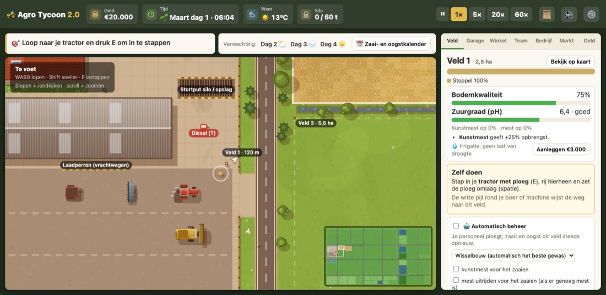
Agro Tycoon 2.0
Farming tycoon you play in the browser, with twelve crops, staff, factories and your own fleet of machines.
- Idea
- A personal project, inspired by the Steam game Agro Tycoon. You start as a farmer on your own yard with €20,000 and grow into a farming tycoon.
- Gameplay
- You drive the tractor, seed drill and combine yourself, or hire staff to plough, sow and harvest your fields. There are twelve crops with their own sowing months, and weather, seasons, soil and market prices decide what you earn. Barns and factories make your harvest worth more.
- Tech
- Built in vanilla JavaScript with ES modules and Vite. The game logic has unit tests, a game test runs in a real browser, and a balance script puts every price and yield into a spreadsheet. Your progress is saved, even after an update.
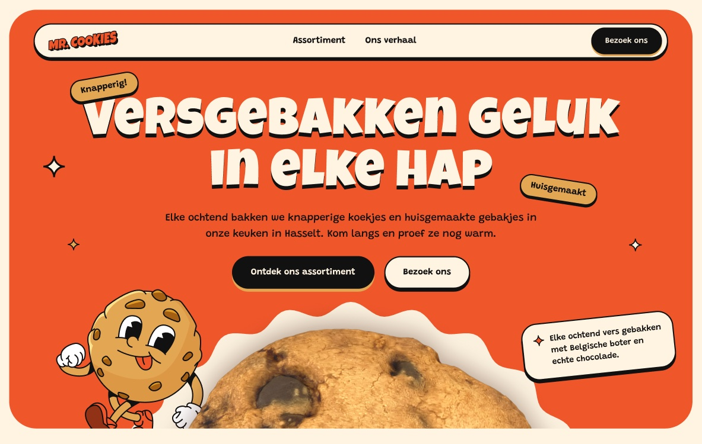
Mr. Cookies
Playful homepage for a fictional cookie bakery in Hasselt, with its own design system and a clickable prototype.
- Brief
- For UI Design 2, I designed three hero sections in three styles for the same bakery, keeping the logo, copy and a maximum of two typefaces. I then spent a week turning the chosen hero into a full homepage.
- Approach
- A moodboard of cookie shops, donut places and a sneaker brand gave me tilted stickers, stamp badges and flying crumbs. The style follows the cartoon mascot, with Luckiest Guy for headings and Grandstander for body text. There's no webshop, so I rewrote the hero from ordering to visiting. That's why "Visit us" is always in the navigation.
- Outcome
- A clickable prototype with six colour variables, seven text styles and components with hover states. Playful elements stay at the edges and never sit on top of text.
- Next time
- Real product photos for each cookie, a mobile version and a quick test with real people.
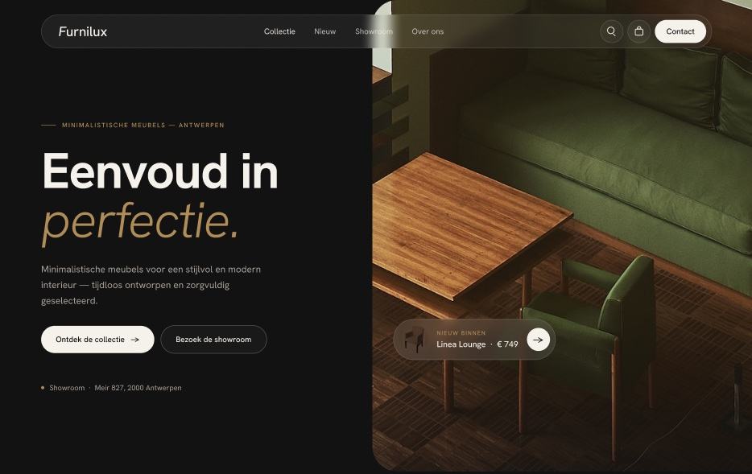
Furnilux
Dark, calm homepage for a fictional furniture brand from Antwerp, on desktop and mobile.
- Brief
- For UI Design 2, a homepage for a fictional furniture brand, on desktop and mobile. The brief asked for dark, minimal and exclusive, with affordable quality as the promise.
- Approach
- The page builds trust before it asks for anything: first impression, showroom, products, reviews and then the newsletter. No pure black, but #121212 with cream text. Gold only sits on dark, because on cream it fails the contrast check. The product section sits on cream so the furniture stands out.
- Outcome
- After feedback, the hero became asymmetric, the headings got bolder and the reviews turned into a grid with arrows. Fraunces made way for one modern typeface, Hanken Grotesk. Mobile was rethought rather than squeezed.
- Next time
- Build components from the start and test with real users.
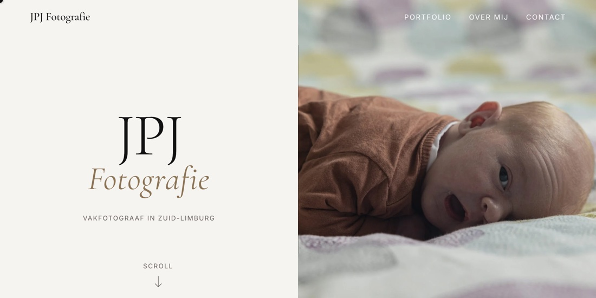
JPJ Fotografie
Portfolio site for a photographer from South Limburg, covering newborn, portrait, weddings and architecture.
- Brief
- A new site for a photographer who's a friend of mine. His old site was dated and very bare, and the goal was to attract new clients.
- Approach
- The site first explains why you'd book him and who he is, so you already know him a little before you get in touch. The portfolio then shows what he can do per category, and a contact page closes it off. The layout stays quiet so the photos do the work. I did the design and code myself in two to three weeks, in HTML, CSS and JavaScript.
- Outcome
- Based on his feedback, I made the cursor easier to see and picked a different header photo. The site isn't in use yet.
- Next time
- Think the project through properly before I start building.
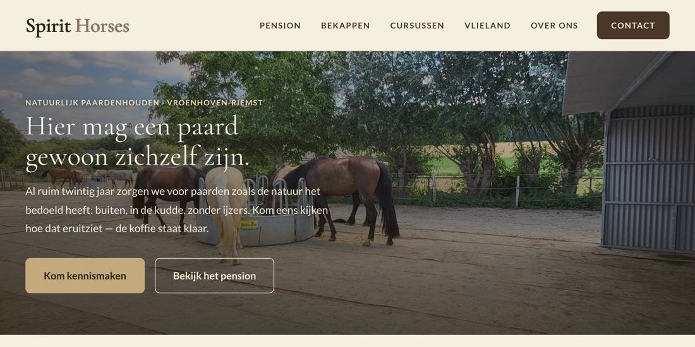
Spirithorses
Website for a natural horse livery in Belgian Limburg, where the owners edit the copy themselves.
- Brief
- Spirit Horses is a horse livery in Riemst. The old site had 21 pages with rates, services and extras mixed together. The owners wanted something simple where they could edit the copy themselves.
- Approach
- I cut the structure down to 10 pages. Livery comes first in the navigation because it's the main service, followed by hoof trimming and courses. The tent rental on Vlieland sits apart as a side activity. The colours are named after the farm, from saddle leather to dry hay. WhatsApp is the main button, because the owners spend their days outside with the horses.
- Outcome
- Live, with Sanity CMS behind it. A change goes online within about a minute. Lighthouse performance on the homepage went from 80 to 93, and every page was checked for accessibility with axe-core.
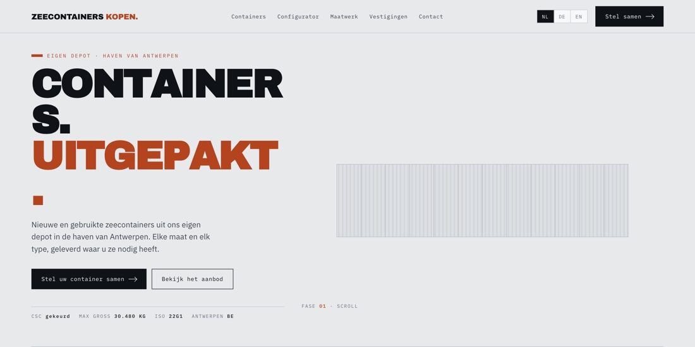
Zeecontainers Concept
Concept for a container dealer, with a 3D configurator that shows size, weight and a guide price live.
- Brief
- A concept site for an existing Belgian container dealer, as the basis for their new website. Built in two days.
- Approach
- Buyers, private or business, mainly want to know size, price, availability and delivery. That's why the configurator takes centre stage. You pick size, type, condition and options, and instantly see outer dimensions, volume, weight and a guide price. Your choice is carried over into the quote request. The type cards on the homepage open the configurator with that type already selected.
- Tech
- There was no 3D model yet, so I built the container procedurally in Three.js, with ribs, corner castings and doors. The real model can be dropped in later. Prices in this concept are example figures.
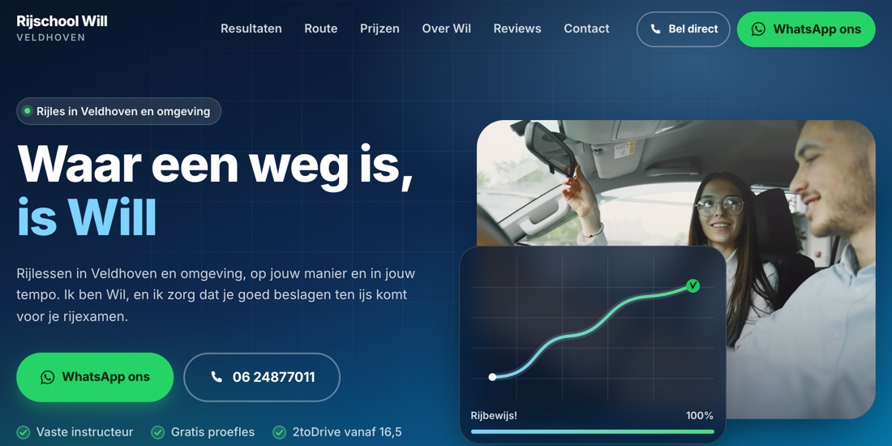
Rijschool Will
Demo site for a driving school in Veldhoven, with a step-by-step route, packages and a cost calculator.
- Brief
- A demo for Rijschool Will, built from a template I made for driving schools. Prices and figures are example content.
- Approach
- The site talks to two people. The student gets a casual tone and 2toDrive from age 16.5. The parent who pays reads that parents can ride along every 10 lessons and that you pay per lesson. A clickable five-step route follows the real CBR process, from free trial lesson to driving test. Four packages sit side by side, with a calculator for 5 to 50 lessons. One button sends your plan by WhatsApp or email.
- Trust
- The pass rate sits next to the national average, with Google reviews below it. If there's no real figure, that block disappears on its own.
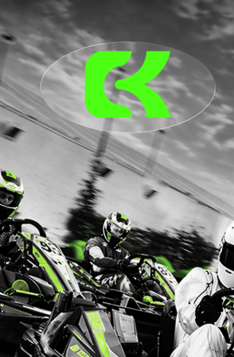
Campus Karting App
Event app for the Campus Karting Student League, with live standings, a venue map and a ticket wallet.
- Brief
- Karting Genk wanted to bring more students to the track. Our team came up with the Campus Karting Student League, a race weekend where PXL, UCLL and UHasselt compete against each other. This was our Work Placement 2 project.
- Approach
- The app is for the race day itself. You follow live lap times and the school standings, find your way with a map of the venue, and get food and drinks with digital vouchers from a ticket wallet. I designed the UI in Figma, built the user flows and prototypes, and wrote the microcopy.
- Team
- Four designers, one web coder and three developers. I was also Scrum Master and ran the daily stand-ups. Some Figma animations turned out hard to build, so I adjusted the design without losing the flow.
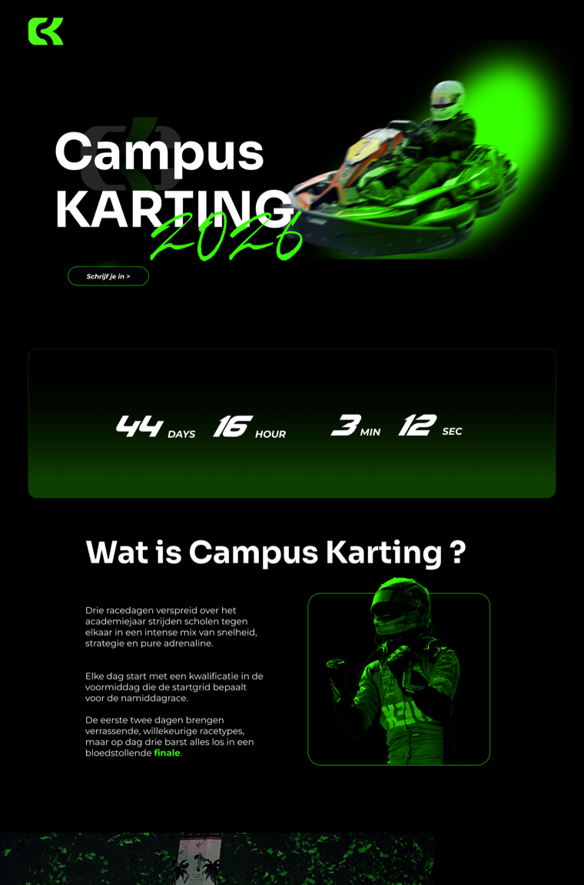
Campus Karting Website
Recruitment site for the Student League, with schedule, rules, tickets and which schools have signed up.
- Brief
- Same project as the app. The website is the event's shop window: get students excited, get teams to sign up and attract schools.
- Approach
- Rules and a changing schedule had to become clear for a young audience. The site shows the schedule, rules, ticket prices and track occupancy, plus which schools have already signed up. I worked on the visual style and structure in Figma, wrote the copy, and picked and edited the photos.
- Outcome
- A responsive design for desktop, tablet and mobile, built by our web coder. The Student League's sporty style carries through from site to app.
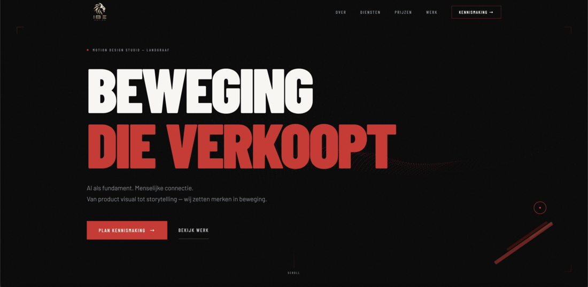
IBE Motion
Portfolio site for a motion studio from Landgraaf, where videos only play when you point at them.
- Brief
- IBE Motion Studio from Landgraaf makes motion, branding and content for brands. The studio needed a place to show its work to companies it wants as clients.
- Approach
- The site steers towards results and a free intro call. Portfolio cards show a calm logo, and the video only starts when you hover over it. On touch, they play in a loop. Videos preload only their first frame, and the Three.js scenes only start once they're in view. The work can be filtered by motion, branding, content and website.
- Motion
- The site itself moves a lot, with particle waves, a 90-frame scroll animation and a custom cursor. If you've set your system to reduce motion, you get a calm version.
Music Match
Motion design in After Effects: a playful character animation cut tightly to the music.
Blender Render 3D
3D scene modelled, lit and rendered in Blender — from modelling to final render.
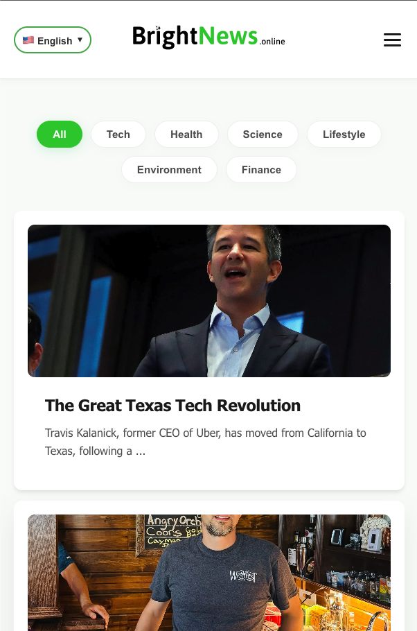
BrightNews
News site that only lets feel-good stories through, filtered in two steps.
- Brief
- A news site that only shows feel-good stories. I've been building it since January 2026.
- Approach
- Twice a day, a GitHub Action pulls in news via RSS. First, AFINN removes clearly negative English items. Then Claude Haiku scores each article on feel-good value, positive wording and relevance. Only articles scoring at least 8 out of 10, with no score below 2, make it through.
- Outcome
- The site runs in five languages, with accounts and premium through Supabase and Stripe. The homepage sits behind a coming-soon page until launch.